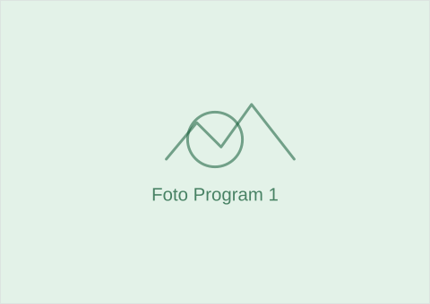

Sedang Berjalan
Beasiswa Pendidikan Anak
Memberikan bantuan biaya pendidikan bagi anak-anak dari keluarga kurang mampu.
Lihat Detail Program
Memberikan bantuan biaya pendidikan bagi anak-anak dari keluarga kurang mampu.
Lihat Detail ProgramPelatihan keterampilan dan pendampingan usaha mikro bagi warga.
Lihat Detail ProgramKegiatan pemeriksaan kesehatan dasar dan edukasi gizi masyarakat.
Lihat Detail ProgramPenyaluran bantuan darurat bagi masyarakat terdampak bencana alam.
Lihat Detail ProgramKami terbuka untuk bekerja sama dengan individu, komunitas, maupun lembaga lain.